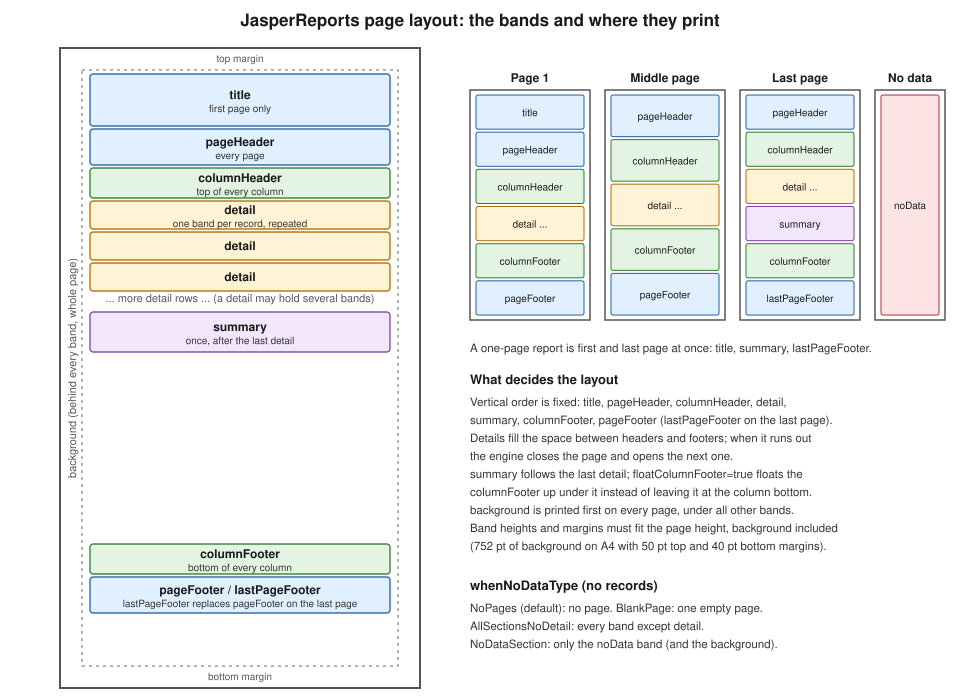

JRXML Report Design
|
This content was generated with the assistance of AI and should be verified against the official documentation before being relied on in production. |
Baseline date: 2026-10-09. A JasperReports template is a description of a page, not a program: it says how big the page is, which bands exist, and which elements sit at which coordinates inside each band. The engine does the rest, filling the detail band once per record, breaking pages, stretching text and printing the footers. This page covers that description for JasperReports 7.0.8, using the monthly sales report of the Bookshelf Billing service as the example. Where values come from (parameters, fields, variables) is the subject of Expressions, Parameters, Fields & Variables, and grouping of Groups, Sorting & Filtering. The place of the design in the design, compile, fill and export pipeline is explained in JasperReports Architecture & Lifecycle, and the Maven setup in Getting Started with Spring Boot.
The example on this page was compiled, filled and exported to PDF with Java 21 and JasperReports 7.0.8, and the PDF was read back to check which bands printed on which page. A few results (what fails, and the exact limits) come from that run and are marked as such.
The v7 JRXML format
JRXML is the XML file format of a JasperReports design. Version 7.0 changed it: the files are now read with Jackson XML
instead of the old SAX digester, the root element has no XML namespace, there is no DOCTYPE and no schema reference, and
every report element is a generic <element> whose kind attribute says what it is. A text field that was written as a
textField element with a nested reportElement and textFieldExpression in a 6.x file is, in 7.0, a single
<element kind="textField" x="..." ...> with an <expression> child. Most attributes that used to be isSomething
booleans lost the prefix (titleNewPage, summaryNewPage, floatColumnFooter), and several attributes became enums with
readable names (hTextAlign="Right", positionType="Float").
The older books consulted for this section describe the earlier format. The JasperReports book of the corpus (B2, written
for JasperReports 1.x and 2.x) and the Ultimate Guide (B3, for versions that predate 1.0) both define the design through a
DTD, jasperreport.dtd, which became an XSD in 3.x and is replaced altogether in 7.0. Their element lists,
attribute names and the namespace and DOCTYPE lines at the top of their examples do not apply to a 7.0 design, and the
old isSplitAllowed boolean they use for splitting bands is now splitType (finding O19, see below). Nothing from those
books is reproduced here.
Two practical consequences follow. First, a JRXML, JRTX or compiled .jasper file written for 6.x cannot be loaded by 7.0:
as a check, a minimal 6.x file (namespace, reportElement, staticText) fails in 7.0.8 with a JRException whose message is
"Unable to load report". The official route is to open and save such files with Jaspersoft Studio 7, which reads the old
formats and writes v7 JRXML; the conversion tool was not run for this page, so check the result of a conversion in
the designer rather than trusting it blindly. Second, an AI assistant or a snippet from a web page that shows
<textField> or <reportElement> is describing 6.x and will not compile.
A complete design
The report below uses every band the engine knows, apart from the group bands covered on the groups page, and one of each
common element except break and generic, which are shown further down. It is the design of the sales report that lists the month’s sales as a table. The logo and the month come
in as parameters, the rows as fields, and the grand total is a variable computed by the engine.
<jasperReport name="sales-design" language="java"
pageWidth="595" pageHeight="842" orientation="Portrait"
columnCount="1" columnWidth="515"
leftMargin="40" rightMargin="40" topMargin="50" bottomMargin="40"
whenNoDataType="NoDataSection">
<parameter name="LOGO" class="java.awt.Image"/>
<parameter name="MONTH" class="java.lang.String"/>
<field name="title" class="java.lang.String"/>
<field name="category" class="java.lang.String"/>
<field name="quantity" class="java.lang.Integer"/>
<field name="amount" class="java.math.BigDecimal"/>
<variable name="grandTotal" class="java.math.BigDecimal" calculation="Sum">
<expression><![CDATA[$F{amount}]]></expression>
</variable>
<background height="752">
<element kind="staticText" x="100" y="280" width="315" height="60" fontSize="48" bold="true"
forecolor="#EEEEEE" hTextAlign="Center" rotation="None">
<text><![CDATA[DRAFT]]></text>
</element>
</background>
<title height="70">
<element kind="image" x="0" y="0" width="60" height="60" scaleImage="RetainShape">
<expression><![CDATA[$P{LOGO}]]></expression>
</element>
<element kind="staticText" x="70" y="0" width="445" height="30" fontSize="20" bold="true">
<text><![CDATA[Bookshelf sales report]]></text>
</element>
<element kind="textField" x="70" y="34" width="445" height="20" fontSize="12">
<expression><![CDATA["Period: " + $P{MONTH}]]></expression>
</element>
</title>
<pageHeader height="24">
<element kind="textField" x="0" y="4" width="515" height="16" fontSize="9" hTextAlign="Right">
<expression><![CDATA["Bookshelf Billing - " + $P{MONTH}]]></expression>
</element>
</pageHeader>
<columnHeader height="22">
<element kind="rectangle" x="0" y="0" width="515" height="22" backcolor="#DDE6F5" mode="Opaque" radius="0"/>
<element kind="staticText" x="4" y="3" width="260" height="16" bold="true"><text><![CDATA[Title]]></text></element>
<element kind="staticText" x="270" y="3" width="110" height="16" bold="true"><text><![CDATA[Category]]></text></element>
<element kind="staticText" x="385" y="3" width="40" height="16" bold="true" hTextAlign="Right"><text><![CDATA[Qty]]></text></element>
<element kind="staticText" x="430" y="3" width="80" height="16" bold="true" hTextAlign="Right"><text><![CDATA[Amount]]></text></element>
</columnHeader>
<detail>
<band height="20" splitType="Prevent">
<element kind="textField" x="4" y="2" width="260" height="16" textAdjust="StretchHeight"
stretchType="ContainerHeight">
<expression><![CDATA[$F{title}]]></expression>
</element>
<element kind="textField" x="270" y="2" width="110" height="16" positionType="Float">
<expression><![CDATA[$F{category}]]></expression>
</element>
<element kind="textField" x="385" y="2" width="40" height="16" hTextAlign="Right" pattern="#,##0">
<expression><![CDATA[$F{quantity}]]></expression>
</element>
<element kind="textField" x="430" y="2" width="80" height="16" hTextAlign="Right" pattern="#,##0.00">
<expression><![CDATA[$F{amount}]]></expression>
</element>
</band>
<band height="1">
<element kind="line" x="0" y="0" width="515" height="1" stretchType="NoStretch">
<pen lineWidth="0.5" lineColor="#999999"/>
</element>
</band>
</detail>
<columnFooter height="20">
<element kind="ellipse" x="0" y="4" width="12" height="12" backcolor="#2E7D32" mode="Opaque"/>
<element kind="staticText" x="18" y="2" width="300" height="16" fontSize="9">
<text><![CDATA[Amounts in EUR, VAT excluded]]></text>
</element>
</columnFooter>
<pageFooter height="24">
<element kind="textField" x="0" y="4" width="515" height="16" fontSize="9" hTextAlign="Center">
<expression><![CDATA["Page " + $V{PAGE_NUMBER} + " (continues)"]]></expression>
</element>
</pageFooter>
<lastPageFooter height="40">
<element kind="textField" x="0" y="4" width="515" height="16" fontSize="9" hTextAlign="Center">
<expression><![CDATA["Page " + $V{PAGE_NUMBER} + " (last)"]]></expression>
</element>
<element kind="staticText" x="0" y="22" width="515" height="14" fontSize="8" hTextAlign="Center">
<text><![CDATA[Bookshelf Billing, generated report]]></text>
</element>
</lastPageFooter>
<summary height="90">
<element kind="frame" x="0" y="10" width="515" height="60" mode="Opaque" backcolor="#F4F4F4">
<box>
<pen lineWidth="0.75" lineColor="#333333"/>
</box>
<element kind="staticText" x="10" y="8" width="200" height="20" bold="true"><text><![CDATA[Grand total]]></text></element>
<element kind="textField" x="300" y="8" width="200" height="20" bold="true" hTextAlign="Right" pattern="#,##0.00">
<expression><![CDATA[$V{grandTotal}]]></expression>
</element>
<element kind="textField" x="10" y="32" width="490" height="16" fontSize="9">
<expression><![CDATA["Rows: " + $V{REPORT_COUNT}]]></expression>
</element>
</element>
</summary>
<noData height="60">
<element kind="staticText" x="0" y="20" width="515" height="24" fontSize="14" hTextAlign="Center">
<text><![CDATA[No sales for this period]]></text>
</element>
</noData>
</jasperReport>Everything in the file follows one pattern. The <jasperReport> element carries the page format and the policies. Each
fixed band (title, pageHeader, columnHeader, columnFooter, pageFooter, lastPageFooter, summary, noData,
background) is a child with a height attribute and the elements directly inside it, in v7 there is no extra <band>
wrapper. Only detail, and the group headers and footers, wrap their content in <band height="...">, because they can
hold several bands. Elements are <element kind="..."> with x, y, width and height in points, relative to the
band’s top left corner inside the margins. The <expression> of a text field or image is Java by default
(language="java" on the root; the compiler for that is jasperreports-jdt, see the Maven setup below).
The driver below compiles the file, fills it from a list of beans and writes the PDF. The row class is a plain JavaBean:
the bean data source reads properties through getters, so a Java record is rejected as a row type (checked with 7.0.8),
and the parameter map must be a mutable HashMap, because Map.of is rejected as the parameters map of fillReport.
package bookshelf;
import java.math.BigDecimal;
/** JavaBean row: JRBeanCollectionDataSource needs getters, a record is not accepted. */
public class Sale {
private final String title;
private final String category;
private final int quantity;
private final BigDecimal amount;
public Sale(String title, String category, int quantity, BigDecimal amount) {
this.title = title;
this.category = category;
this.quantity = quantity;
this.amount = amount;
}
public String getTitle() { return title; }
public String getCategory() { return category; }
public int getQuantity() { return quantity; }
public BigDecimal getAmount() { return amount; }
}package bookshelf;
import java.awt.Color;
import java.awt.Graphics2D;
import java.awt.image.BufferedImage;
import java.io.InputStream;
import java.math.BigDecimal;
import java.nio.file.Files;
import java.nio.file.Path;
import java.util.ArrayList;
import java.util.HashMap;
import java.util.List;
import java.util.Map;
import net.sf.jasperreports.engine.JasperCompileManager;
import net.sf.jasperreports.engine.JasperExportManager;
import net.sf.jasperreports.engine.JasperFillManager;
import net.sf.jasperreports.engine.JasperPrint;
import net.sf.jasperreports.engine.JasperReport;
import net.sf.jasperreports.engine.data.JRBeanCollectionDataSource;
public class SalesDesignDemo {
public static void main(String[] args) throws Exception {
int rows = args.length > 0 ? Integer.parseInt(args[0]) : 80;
try (InputStream jrxml = SalesDesignDemo.class.getResourceAsStream("/reports/sales-design.jrxml")) {
JasperReport report = JasperCompileManager.compileReport(jrxml);
List<Sale> sales = new ArrayList<>();
for (int i = 1; i <= rows; i++) {
sales.add(new Sale("Book number " + i, i % 2 == 0 ? "Fiction" : "Science",
i % 5 + 1, new BigDecimal("12.50").multiply(BigDecimal.valueOf(i))));
}
Map<String, Object> params = new HashMap<>(); // Map.of is rejected by fillReport
params.put("LOGO", logo());
params.put("MONTH", "2026-09");
JasperPrint print = JasperFillManager.fillReport(report, params, new JRBeanCollectionDataSource(sales));
Path out = Path.of("sales-design-" + rows + ".pdf");
Files.write(out, JasperExportManager.exportReportToPdf(print));
System.out.println(out + ": " + print.getPages().size() + " pages");
}
}
private static BufferedImage logo() {
BufferedImage image = new BufferedImage(60, 60, BufferedImage.TYPE_INT_RGB);
Graphics2D g = image.createGraphics();
g.setColor(new Color(0x1F5FA6));
g.fillRect(0, 0, 60, 60);
g.dispose();
return image;
}
}The Maven coordinates are the JasperReports ones used throughout this section, all at 7.0.8. The jasperreports-pdf module
holds the PDF exporter, jasperreports-fonts the bundled DejaVu fonts and jasperreports-jdt the Eclipse compiler that compiles the Java expressions (see the Getting Started page for why it is needed).
<properties>
<maven.compiler.release>21</maven.compiler.release>
<jasperreports.version>7.0.8</jasperreports.version>
</properties>
<dependencies>
<dependency>
<groupId>net.sf.jasperreports</groupId>
<artifactId>jasperreports</artifactId>
<version>${jasperreports.version}</version>
</dependency>
<dependency>
<groupId>net.sf.jasperreports</groupId>
<artifactId>jasperreports-pdf</artifactId>
<version>${jasperreports.version}</version>
</dependency>
<dependency>
<groupId>net.sf.jasperreports</groupId>
<artifactId>jasperreports-fonts</artifactId>
<version>${jasperreports.version}</version>
</dependency>
<dependency>
<groupId>net.sf.jasperreports</groupId>
<artifactId>jasperreports-jdt</artifactId>
<version>${jasperreports.version}</version>
</dependency>
</dependencies>Running java bookshelf.SalesDesignDemo 80 (rows as argument, 80 by default) produced a 3-page PDF, 0 rows a 1-page PDF with
only the noData text, and 3 rows a single page. Derived from the
JasperReports sample on creating reports and the
JasperCompileManager API.
Page format, columns and print order
The attributes of <jasperReport> set the page and the grid inside it.
| Attributes | Meaning |
|---|---|
|
The page size in points (595 by 842 is A4 portrait) and its orientation, |
|
The margins. All bands live inside them. The usable height is the page height minus top and bottom margins, and the usable width the page width minus left and right margins. |
|
The number of columns, the width of each and the gap between them. |
|
|
|
Print the |
|
|
|
|
|
What a report with no records produces, described in its own section below. |
The bands are measured against the page. The sum of the band heights that appear together on a page, plus the margins, must
fit the page height, and the compiler checks it. For the example above, with top margin 50 and bottom margin 40, the
background can be at most 752 points tall: a background of the full page height 842 failed validation in 7.0.8 with
"The background section and the margins do not fit the page height". The same check applies to the other fixed bands, so a
very tall title or pageFooter is rejected at compile time, not at fill time.
The bands and where they print
Bands are the horizontal strips of the design. Each one has a fixed place in the page and a rule for when it prints, and the figure shows all of them on one page and on the pages of a longer report.

| Band | When it prints |
|---|---|
|
On every page, behind everything else. It is the place for a watermark such as the "DRAFT" text of the example. In the run
above it also appeared on the page produced by the |
|
Once, at the top of the first page, before the page header. With |
|
At the top of every page, below the title on the first page. In the example it is printed on all three pages. |
|
At the top of every column of every page. The labels of a table belong here. |
|
Once for each record. A report may declare several |
|
At the bottom of every column, or directly under the last detail when |
|
At the bottom of every page, except the last page when a |
|
Replaces |
|
Once, after the last detail, with the totals. If it does not fit it goes to the next page, and |
|
Printed instead of the whole report when there are no records and |
The group header and footer bands (groupHeader, groupFooter) sit around the detail bands of each group and are
described in Groups, Sorting & Filtering.
Reports with no data
whenNoDataType decides what a report does when the data source has no records. There are four values, and the example
was run with the fourth.
-
NoPagesis the default. The result is a document with no pages, which is not a useful PDF, so a service should checkprint.getPages().isEmpty()before exporting or choose another value. -
BlankPageproduces one empty page. -
AllSectionsNoDetailprints every section except the detail: title, headers, footers and summary appear with empty values. With the compiled test report that has a title and a summary, the filled print had exactly those two elements. -
NoDataSectionprints only thenoDataband, plus the background. This is the value the example uses: with 0 rows the PDF contained the background text and "No sales for this period", with no title, header or footer.
The choice matters for services: an empty month must still return a valid PDF if the contract of the endpoint says so, and
NoDataSection is the way to say "nothing to report" inside the document.
Elements
Every element has the geometry attributes x, y, width and height, plus colours (forecolor, backcolor) and a
mode that is Opaque or Transparent, and the optional printWhenExpression, positionType, stretchType,
removeLineWhenBlank, printRepeatedValues and printInFirstWholeBand. The kinds used in a typical report are these.
kind |
What it is |
|---|---|
|
Fixed text in a |
|
Text computed by an |
|
A picture from an |
|
A straight line between two corners of its box, with |
|
A box with optional |
|
An ellipse in its box, a circle when the box is square (the green dot in the example column footer). |
|
A container with child elements positioned relative to the frame and an optional |
|
A page or column break placed between the elements of a band, with |
|
A placeholder for content produced by an extension, identified by a |
The break and generic forms were checked with a separate throwaway design in 7.0.8. A break with
type="Page" and a printWhenExpression of the form $V{REPORT_COUNT}.intValue() == 3 placed between two elements of a
detail band produced a second page after the third record. A break placed on the last line of a band, after all its
elements, had no visible effect, because there was nothing below it to move. A generic element with a genericType and
one <parameter> compiled and filled without errors; whether it draws anything in PDF depends on an export handler for its
type being registered by an extension, which was not checked.
<detail>
<band height="40">
<element kind="textField" x="0" y="0" width="515" height="18">
<expression><![CDATA[$F{title}]]></expression>
</element>
<element kind="break" x="0" y="20" width="515" height="1" type="Page">
<printWhenExpression><![CDATA[$V{REPORT_COUNT}.intValue() == 3]]></printWhenExpression>
</element>
<element kind="staticText" x="0" y="22" width="515" height="16">
<text><![CDATA[after break]]></text>
</element>
</band>
</detail>Derived from the shapes sample, the images sample, the no page break sample and the generic element sample.
The rotation attribute turns text by 90 degrees (Left or Right) or upside down (UpsideDown); the example sets
rotation="None" on the watermark only to show the attribute. See the
rotation sample.
Stretching and positioning
The height written in the design is the minimum. A text field with textAdjust="StretchHeight" grows when its text needs
more lines, and the engine then has to decide what happens to the other elements and to the band itself. Two attributes of
every element control that.
stretchType says how an element follows the growth of something else.
-
NoStretch(the default) keeps the height written in the design. -
ElementGroupHeightandElementGroupBottomstretch it with the elements of its group, the ones that overlap it. -
ContainerHeightandContainerBottomstretch it with the band or frame that holds it. This is how a vertical line or a cell background keeps the full height of a row when the title in that row wraps.
positionType says how an element moves when elements above it grow.
-
FixRelativeToTop(the default) keeps its distance from the top of the band. -
Floatmoves it down by the amount that the elements above it have stretched, so it never overlaps them. -
FixRelativeToBottomkeeps its distance from the bottom of the band.
In the example the title uses textAdjust="StretchHeight" and stretchType="ContainerHeight", and the category uses
positionType="Float". To confirm the effect, a row with a title long enough to wrap onto four lines was filled: the band grew
to fit them, the next row started below it, and the page layout stayed valid. Another attribute, removeLineWhenBlank,
removes the vertical space of an element that evaluates to empty, which is useful for optional address lines.
Derived from the stretch sample.
Splitting bands across pages
A detail band that does not fit in the space left on the page can be split or moved. splitType on a band controls
that, with three values.
-
Stretchis the default: the band may be split, and the elements that stretch decide where; the API page below states the exact rule. -
Preventforbids splitting: the whole band moves to the next page, unless it is taller than any page can hold. -
Immediateallows the band to be split at once, at any point.
splitType replaces the boolean isSplitAllowed of the books and of 6.x designs (finding O19): the three values express what the boolean could not. Rows of a table normally use Prevent, as in the example, so that a record never has its
text cut by a page boundary; a very tall band that must flow across pages uses Stretch or Immediate.
The element attribute printWhenDetailOverflows makes an element print again on the continuation when its band overflows to the next page.
Derived from the horizontal layout sample,
the no-report sample
and the SplitTypeEnum API.
Converting v6 files
Moving a 6.x project to 7.0 touches every design. The designs and style templates (JRXML, JRTX) must be converted, and any
.jasper file stored in the repository must be recompiled from a converted JRXML. The conversion to the new format is done in
Jaspersoft Studio 7, as stated by the project. After conversion, review these points, which are the ones that changed in the
format.
-
The root element has no namespace or schema, and each report element is an
<element kind="...">. -
Fixed bands are direct children with a
height, andsplitTypereplacesisSplitAllowed. -
The
isprefix disappeared from many booleans and several text options became enums. -
The Java classes moved too (for example the PDF exporter is
net.sf.jasperreports.pdf.JRPdfExporterin 7.0), see JasperReports Architecture & Lifecycle.
A good habit is to keep the JRXML as the source of truth in src/main/resources/reports, compile it in the application
(as the driver above does) or at build time, and never commit compiled .jasper files.
Where to go next
-
Expressions, Parameters, Fields & Variables for what goes inside
<expression>. -
Groups, Sorting & Filtering for group bands.
-
Styles, Templates & Markup for styles that replace repeated fonts and colours.
-
Generating Reports from Databases & Services for feeding the report.